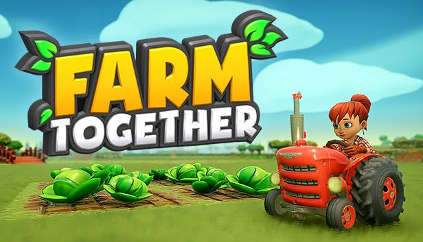
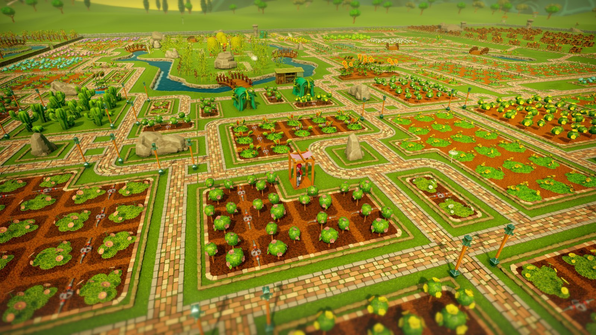
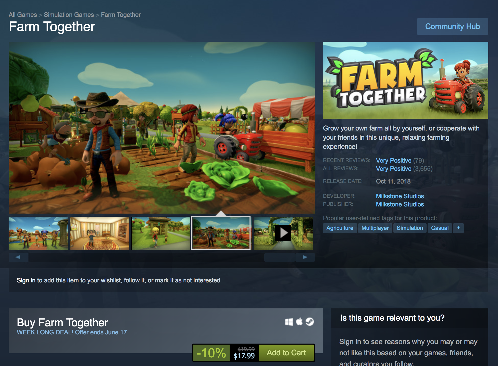
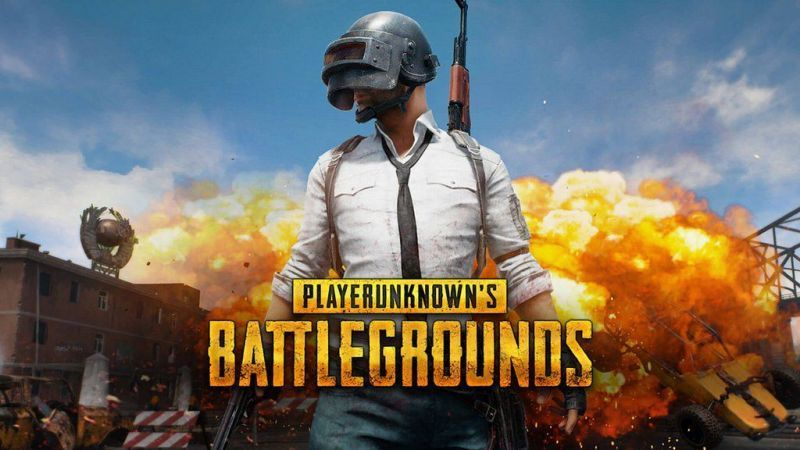

I not a big fan of game like league of legend, I been try out to play some difference game because Im tired of FPS game, shooting game I saw a lot of my friend playing these type of game. So I decide to try out, first couple of month this game is way hard for me because this game require a smart brain to know how to win the game. this game help me use my brain a lot when I play the game. right now Im not in the game any more because I know it this game is not fit for me well. This game is one of the best game that ever existed for a Free Game.
4. Farm Together

If you not a fan of violence game such as shooting and fighting game, and you want to play game that chill with your friend and help you relax.So I suggest farm together is one of the game help me relax the most other game out there. The game called farm together so it all about farming. At the begining when you create your own farm, the game give you a land with some crop and you and your friend start to working together to build a farm open more land build house and do a lot of more creative thing.

Trust me when you start playing this game you will fell in love with it. This game doesn't require much skill to play, it just depend on you having a creative mind, no competition, it all about the game make you feel better when you play.
The game on sale right now, you can get the game on steam.

3.PlayerUnknown's Battlegrounds

Pubg is the frist battle royal game that I ever play, I don't know anything about batlle royal game, that when you kill everyone so you can be the last one standing. Pubg is the repersent all what is a battle royal game need to have. In this game there is many difference type of play when you choose what mode you want to play. For example you can play solo that 1 vs 99 people and Dou that you can have other player will be your teammate and play again other 25 team. The last one is play squad you can have 4 people on your team and play again 16 team other team.
Pubg have a incredible graphic graphic, you can set your graphic from low to very high, if you got a good pc you can play the game at max setting. If you have a medium pc you can get your game to medium or low. Most of people play the game at low even their pc good, it depend on the person.